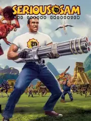

 |
|
| Tiempo de juego | No Jugado |
| Última actividad | Nunca |
| Añadido | 17/11/2025 13:05:39 |
| Modificado | 10/12/2025 13:52:50 |
| Estado de finalización | Not Played |
| Librería | Playnite |
| Fuente | |
| Plataforma | PC (Windows) |
| Fecha de lanzamiento | 24/1/2002 |
| Puntuación de la Comunidad | 80 |
| Puntuación de la Crítica | 90 |
| Puntuación de usuario | |
| Género | Indie Shooter |
| Desarrollador | Croteam |
| Editor | Gathering of Developers |
| Característica | Co-Operative Multiplayer Single Player Split Screen |
| Enlaces | Steam GOG 🌟Classics Revolution |
| Tag | |
¿Creías que los shooters eran todos pasillos oscuros, milicos y realismo? Serious Sam: The Second Encounter es la respuesta a esa mentira. Es un juego que tiene CERO historia, CERO sigilo y DOSCIENTOS POR CIENTO de masacre descerebrada.
Imaginá esto: sos un chabón en remera blanca y jeans, "Serious" Sam Stone. Una entidad alienígena malvada llamada "Mental" quiere destruir la Tierra. ¿Tu misión? Viajar por el tiempo y reventar a CADA. PUTO. BICHO. que Mental te tire encima.
Eso es todo. No hay trama. No hay diálogos profundos.
Si "The First Encounter" nos enseñó a correr para atrás, "The Second Encounter" lo perfeccionó. El juego te tira en mapas GIGANTES (Mesopotamia, Europa Medieval, ¡Babilonia!) y te suelta, literalmente, CIENTOS de enemigos al mismo tiempo.
Olvidate de las coberturas. Acá, si te quedás quieto, durás 3 segundos. Es la fiesta del "circle-strafing" (correr en círculos).
"The Second Encounter" es MÁS. Más enemigos, más armas, más locura. Agregó "power-ups" como la "Serious Speed" (correr como un enfermo) y el "Serious Damage".
Es el shooter más puro que existe. No te pide que pienses. Te pide que tengas reflejos y el dedo peg